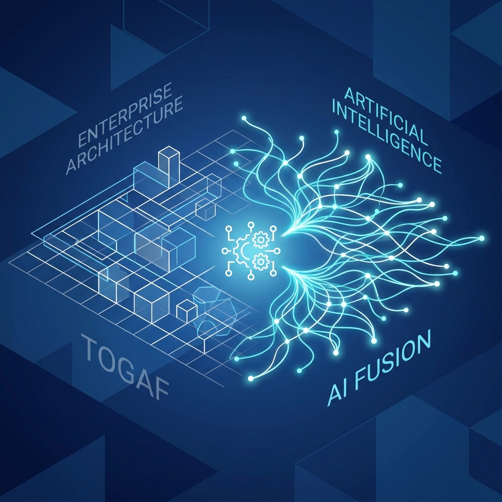

By: Rodrigo Ramos
Enterprise Architecture (EA) has long been the backbone of strategic IT alignment, with The Open Group Architecture Framework (TOGAF) serving as the industry standard. However, the rapid ascent of Artificial Intelligence (AI) in software engineering is reshaping how we approach architecture. The convergence of TOGAF's structured methodology with the adaptive power of AI creates a new paradigm: Cognitive Enterprise Architecture.
As a Solutions Architect, I see immense potential in integrating AI into the TOGAF Architecture Development Method (ADM). This fusion not only accelerates decision-making but also enhances the precision and adaptability of architectural blueprints.
The ADM is the core of TOGAF, a cycle of continuous architectural development. AI can revolutionize each phase:
One of the biggest challenges in EA is ensuring compliance. AI agents can continuously monitor codebases and infrastructure against defined architectural standards. By integrating LLM-based policy checkers into CI/CD pipelines, we can automate the verification of TOGAF compliance, ensuring that "Shadow IT" and architectural drift are minimized in real-time.
For brownfield projects, understanding legacy systems is often the bottleneck. AI-driven reverse engineering tools can scan legacy code, map it to TOGAF metamodels, and suggest refactoring paths to microservices or cloud-native architectures. This drastically reduces the "AS-IS" analysis time, allowing architects to focus on the "TO-BE" state.
The marriage of TOGAF and AI is not about replacing the architect but empowering them. By offloading data analysis, compliance checking, and documentation to AI, architects can elevate their focus to strategic innovation and stakeholder value. As we move forward, the most successful engineering teams will be those that view AI not just as a coding assistant, but as a structural partner in enterprise architecture.